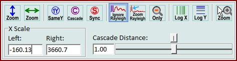

|
图谱查看器刻度和缩放
|
您可以使用图谱查看器环形菜单打开这些功能。
一般来说，X轴对于同一查看器中显示的所有图谱对象始终相同。
对于同一查看器中显示的所有图谱对象，Y轴可以不同。每个图谱的Y轴标尺值可以使用图谱查看器列表来定义。此外，还有一些不同的操作可以快速更改Y轴缩放行为（见下文）。

放大Y轴标尺：
放大Y轴标尺以查看当前选定图谱对象的所有Y像素。
右键点击可切换自动放大Y模式。这将在图谱更改时自动执行放大操作。快捷键"Y"。
放大X轴标尺：
放大X轴标尺以查看所有图谱对象的所有X像素。
右键点击可切换自动放大X模式。这将在图谱更改时自动执行放大操作。快捷键"X"。
相同Y轴标尺：
如果勾选，所有图谱数据对象共享相同的Y轴标尺。在任何图谱上更改标尺时，它会自动同步。
如果"自动放大Y模式"已开启：您可以停用同步缩放并选择一个所需图谱（使用颜色区域或双击图谱），以定义哪个图谱应用于自动缩放Y标尺。快捷键"1"。
层叠图谱：
将多个图谱对象层叠显示。更改层叠距离以定义图谱之间的间隙大小。
注意：如果"相同Y轴标尺"也处于活动状态，您可以使用鼠标滚轮缩放所有图谱，但请确保将鼠标定位在正确（选定）的图谱位置。快捷键"C"。
同步缩放：
如果勾选，通过鼠标滚轮更改Y轴将缩放查看器中的所有图谱对象。
仅在多个图谱未层叠时有效。快捷键"S"。
忽略瑞利：
如果勾选，任何放大Y轴标尺操作将忽略瑞利区域。仅适用于光谱图谱对象。
放大瑞利峰：
放大瑞利峰。在校准瑞利峰时可能有用。快捷键"R"。
仅自动放大Y轴：
如果勾选，更改时的自动Y轴缩放只会放大，不会缩小。
对数X轴：
打开或关闭对数X轴标尺。快捷键"Control-L"。
对数Y轴：
打开或关闭对数Y轴标尺。小于0的值将绘制在窗口的最底部。快捷键"L"。
鼠标缩放：
将鼠标模式更改为"鼠标缩放模式"。在图谱查看器中点击并拖动一个矩形，将选定的图谱对象精确缩放到该区域。
您可以按住 Control 键缩放矩形区域，而不是切换到鼠标缩放模式。
X标尺左/右（浮点编辑框）：
定义所有图谱的X轴标尺。您也可以在键盘上按住 Control 键同时转动鼠标滚轮来缩放X轴。
层叠距离（滑块）
在这里您可以定义层叠多个图谱对象时的间隙大小。
值为0.0表示无层叠，值为1.0表示完全层叠。滑块顶部的小按钮可用于将值设置为1.0。